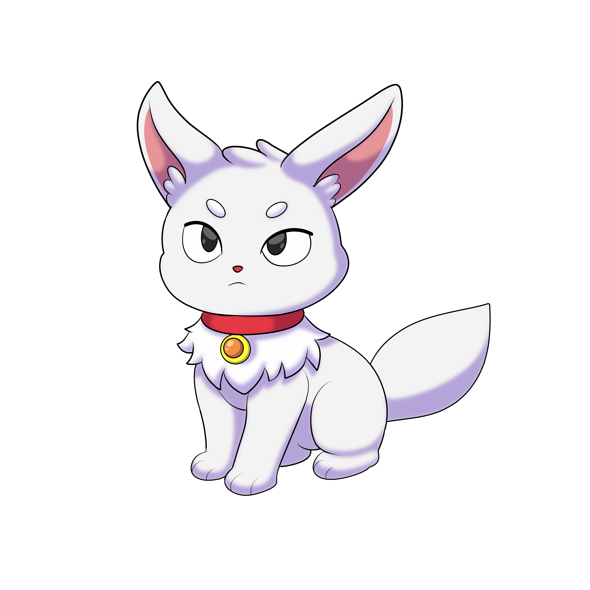
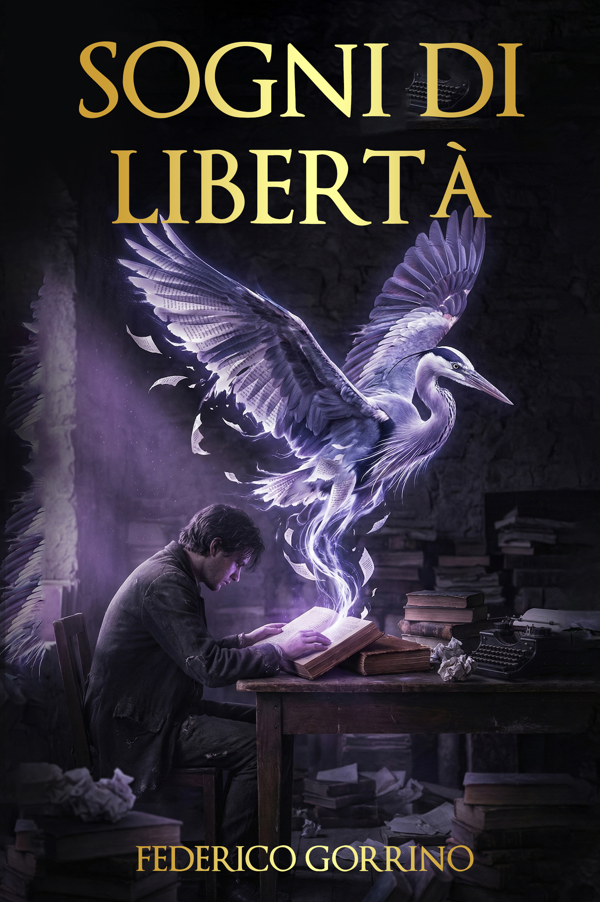
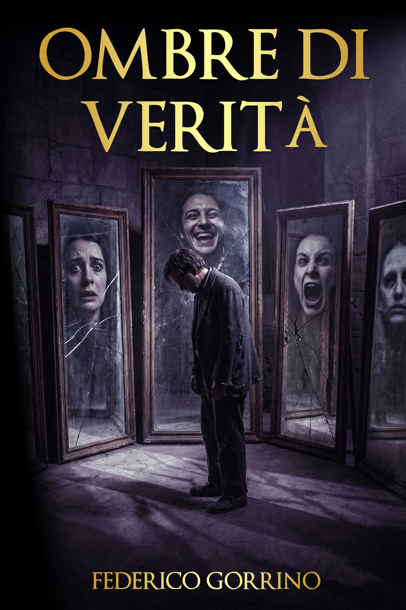

Una Voce
Dal Profondo
guardarsi, formarsi, scoprirsi.
Un universo di psicologia e narrazione: unisce introspezione, conoscenza e creatività per accompagnarti in un viaggio autentico.
IL MIO PROGETTO
Una Voce Dal Profondo nasce per unire divulgazione psicologica e narrazione: spiegare con chiarezza e raccontare storie, per accompagnarti alla scoperta del mondo interiore. Il sito si legge in tre mosse:
Silen
Silen è la mascotte che guida il viaggio: una forma per ogni pianeta, accanto a chi sceglie di guardarsi dentro. Se non sai da dove cominciare, comincia da qui.
Conosci SilenLe collezioni
Quarantotto schede sugli otto pianeti, una per ogni tema: disturbi, neurodivergenze e sfumature dell'esperienza umana. Ogni scheda ha due voci: Cos'è, la spiegazione chiara, e La luna racconta, la voce poetica del progetto. Non sono storie — quelle stanno nei libri — e non sono schede cliniche: sono divulgazione.
Esplora le collezioniI libri
La collana Voci dal Profondo trasforma quegli stessi temi in storie: favole moderne e racconti introspettivi per ragazze e ragazzi dai 6 ai 18 anni.
Scopri i libriGLI ABITANTI DEL MIO UNIVERSO

Silen 
Un viaggio intergalattico alla scoperta del proprio mondo interiore, tra psicologia e narrazione.
Silen è la specie ancestrale da cui discendono tutti i visitatori del nostro universo. Attraverso le sue diverse forme planetarie, ci accompagna a scoprire la bellezza e la complessità di ogni sfumatura dell'umano. Non offre risposte: cammina accanto a chi sceglie di guardarsi dentro, capirsi e accogliersi.OGNI PIANETA UN MONDO INTERIORE
Come i pianeti del Sistema Solare, ogni mente segue rotte uniche.
Esplora le collezioni dedicate alle diverse sfumature dell'esperienza umana: un percorso di divulgazione psicologica che unisce scienza e racconto.
Come funziona: passa il mouse su un pianeta — oppure toccalo, o raggiungilo da tastiera e premi Invio — per vedere i suoi temi. Clicca un tema per aprire la scheda dedicata, oppure apri tutta la collezione.
MARTE
Umore e Stress
Accendi il coraggio, governa la tempesta
Tocca o premi Invio per vedere i temi


MERCURIO
Differenze nell'Apprendimento
Il pensiero segue rotte inedite
Tocca o premi Invio per vedere i temiScegli un tema


VENERE
Disturbi di Personalità
Nell'armonia del sé, il ritratto dell'anima
Tocca o premi Invio per vedere i temi


TERRA
Cervello e Percezione
Radicati nel reale, esplora l'infinito
Tocca o premi Invio per vedere i temi


GIOVE
Neurodivergenza
Oltre i confini, la visione si espande
Tocca o premi Invio per vedere i temi


SATURNO
Neurosviluppo
Costruire il tempo, plasmare il divenire
Tocca o premi Invio per vedere i temi


URANO
Disturbi Neurologici
L'energia che danza tra le connessioni
Tocca o premi Invio per vedere i temi


NETTUNO
Disturbi d'Ansia
Placare l'abisso, ritrovare la riva
Tocca o premi Invio per vedere i temi


OGNI OPERA HA IL SUO SOLE
Se le collezioni spiegano, i libri raccontano: la collana Voci dal Profondo trasforma gli stessi temi esplorati tra i pianeti in storie per ragazze e ragazzi. Ogni volume ha il suo sole, e la collana segue la geografia del sole: il primo volume guarda in alto, dove d'estate il sole del Tropico del Cancro (+23,4°) sta dritto sopra di noi — è la speranza, la luce che vogliamo tenere vicina. Il secondo guarda lontano, dove d'inverno il sole del Tropico del Capricorno (-23,4°) resta basso sul mare — è la verità, che tendiamo a tenere lontana. Tra i due tropici corre l'Equatore (0°), dove il sole passa due volte l'anno e giorno e notte si equivalgono: qui si incontrano le due anime della collana, nel terzo libro — un romanzo che le fonde in un'unica visione.


Ombre di Verità
Una raccolta di racconti introspettivi sul coraggio di guardarsi dentro.
Vai su AmazonL'erede di Sherlock Holmes
Un romanzo che unisce le due anime della collana in un'unica visione.
COSA DICONO GLI ESPLORATORI DEL MIO UNIVERSO
Esploratori che hanno visitato il nostro universo e, al ritorno, hanno lasciato la loro recensione.

Roberto Baldassari
Ex Deputato della Repubblica Italiana
"Un esordio luminoso. Un libro che non vuole complicare il mondo, ma provare a curarlo attraverso il potere del racconto."

Le Transatlantike
Associazione di Promozione Sociale
"Un libro in cui la voglia di libertà porta i protagonisti a superare le paure e ad essere se stessi."
Valentina Santini
Egittologa
"Federico ha il superpotere di far danzare le parole. Nelle sue storie (che non sono mai solo "storie") c'è una musica che suona come un regalo e che fa bene all'anima."
IL TUO PASSAPORTO NEURODIVERGENTE
Ogni esploratore porta con sé una mappa del cielo. Scegli fra le quarantotto lune degli otto pianeti quelle che parlano di te, dagli un nome e un nomignolo da esploratore, e costruisci un passaporto da tenere con te — da leggere, da mostrare, da condividere.
INFORMAZIONI E LICENZE
Le opere esposte sono tutelate da diritto d'autore. Per collaborazioni, richieste professionali o per consultare il catalogo delle licenze autorizzate, puoi trovarmi qui:
Ogni riproduzione non autorizzata è vietata.